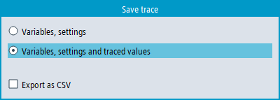
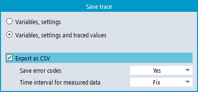

You have two options to save a trace session:
Variables and settings: Only the variables and the settings are saved.
Variables, settings and recorded values: The variables, settings and the recorded values are saved.
The trace session was used to determine measured values.
You have edited an active trace session and recorded measured values.
Press the "Save trace" softkey.
The "Save trace" dialog opens and offers the following save options.
Select the appropriate setting and press the "OK" softkey.
The dialog for memory management opens and specifies the file name in the "Trace file name" input field. The file format is automatically specified as *.xml and cannot be changed.
The target directory is "Trace", for example:
Default path: .../user/sinumerik/hmi/data/trace/
Change the file name if you do not wish to use the existing name or wish to overwrite it.
- or -
Press the "Change folder" softkey if you wish to save the session file in a folder other than in the standard "Trace" folder.
The data tree opens and you can select between the configured drives.
- or -
Press the "New directory" softkey if you wish to create a new directory.
The "New directory" window opens in which you can assign a directory name.
- or -
Press the "Search" softkey to use dialog "Search file".
Click "OK" to confirm your entries and to save the session file.
If the file name was changed and a session file with this name already exists, you will receive a corresponding confirmation prompt.
| Note |
|
An Expert Trace license is required to use this function, see "Expert Trace functions". |
To export the measurement data to a CSV file, select check box "Export as CSV" in dialog "Save trace".
You can select to save CSV file with or without error codes. Error codes can only be present in the data if there was an interruption when recording.
You can select if you want to save the data with fixed or optimized time interval.
If the trace configuration contains signals measured for an IPO event, the time interval is the shortest sampling interval.
If the trace configuration contains only PLC signals measured with the OB1 event (PLC cycle), then the time interval will be 0.1 ms. Due to the short interval, the size of the generated file can be large.
If a signal does not have a measured value for every data point (e.g., some signals are measured with longer sampling intervals), then the missing values will be filled in with the last known value of the signal.
Missing values during interruptions are also filled with the last known values. When error codes are also exported, then the presence of the error code indicates the interruption.
Only those measurement points are saved to the CSV file where a data value actually changed. Exceptions:
The first and last measurement points are always saved.
The start and end of interruptions will always be saved, if an interruption exists and the file is saved with error codes.
As a result, the file size is smaller, but the time intervals are irregular.
If the trace session contains signals without measured data or mathematical (calculated) signals, then these signals are not exported to the CSV file.